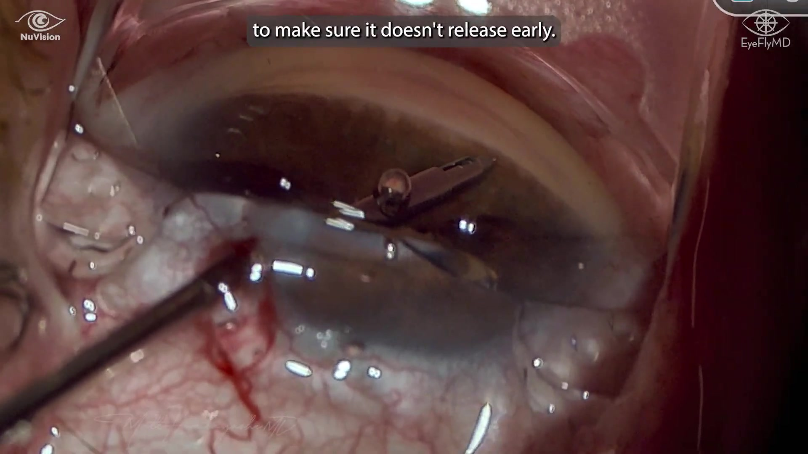

▶| System | Drug & format | Duration | Status |
|---|---|---|---|
| iDose TR | Travoprost — titanium, non-biodegradable, re-dosable | Label ~3 yr | FDA approved 2023 |
| Durysta | Bimatoprost — biodegradable intracameral | ~3–4 mo | FDA approved 2020 |
| OTX-TIC | Travoprost — biodegradable hydrogel | 4–6 mo | Phase 3 (missed endpoint) |
| ENV515 | Travoprost XR — biodegradable | ~6 mo | Phase 2a |
| SpyGlass | Bimatoprost — drug-eluting IOL pads (at cataract) | Up to 3 yr | Phase 1/2 |
| Option | Indication | On a med? | IOP drop | Notes |
|---|---|---|---|---|
| iDose TR | Mild–moderate OAG + ocular HTN | Not required | ~20–25% | Continuous travoprost; can get OHT / one-med patients off drops |
| iStent Infinite (3 stents) |
Mild–moderate OAG | Required — must be on a med | ~15–20% (if lucky) | Not for ocular HTN; best when noncompliant or poor ocular surface |
| OMNI | Ocular HTN + mild–moderate | Not required | Largest drop | Usually 2+ meds / more moderate disease; ↑ hyphema & cyclodialysis-cleft risk → historically after iStent |
| ECP | Closed-angle cases | — | — | For closed angles; also driven by insurance coverage |